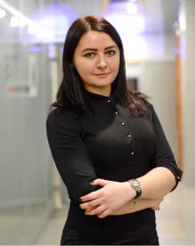

<section class="teacher">
  <div class="container">
    
    <h2 class="teacher__title">Elena Moreva</h2>
    <ul class="teacher__list">
      <li class="teacher__item">
        <svg class="hero__svg">
          <use href="../img/symbol-defs.svg#icon-campfire"></use>
        </svg>
        <p class="teacher__item__text">
          6 years of experience in preparing students for UPE
        </p>
      </li>
      <li class="teacher__item">
        <svg class="hero__svg">
          <use href="../img/symbol-defs.svg#icon-campfire"></use>
        </svg>
        <p class="teacher__item__text">
          Own result of passing VNO - 197 points 2 years in a row
        </p>
      </li>
      <li class="teacher__item">
        <svg class="hero__svg">
          <use href="../img/symbol-defs.svg#icon-campfire"></use>
        </svg>
        <p class="teacher__item__text">
          Passed excellent at the international analogue of UPE - Cambridge PET
          (Preliminary English Test)
        </p>
      </li>
    </ul>
    <ul class="teacher__list__grant">
      <li class="teacher__item__grant">
        Graduated from the Institute of International Relations of the NAU with
        a degree in translator-analyst.
      </li>
      <li class="teacher__item__grant">
        In spare time takes courses from the best universities in the world on
        effective teaching and essay writing techniques.
      </li>
      <li class="teacher__item__grant">
        Completed: English Grammar and Essay Writing (Berkeley), English Grammar
        & Style (The University of Queesland), How to Write an Essay (Berkeley),
        Academic and Business Writing (Berkeley), The Art of Teaching (GEMS
        education), Powerful Tools for Teaching and Learning (University of
        Houston).
      </li>
    </ul>
    <a href="#" class="teacher__link"
      >Cambrige English Entry Level Certificate</a
    >
  </div>
</section>
